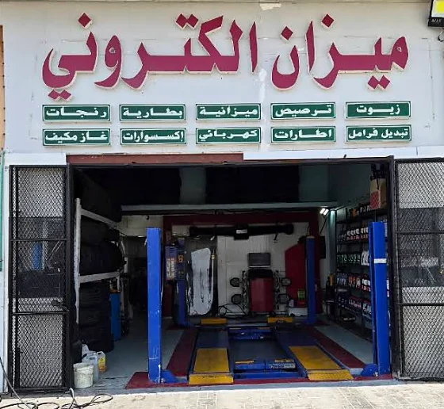

ما دور البطارية؟
وظيفة البطارية الأساسية هي توفير الطاقة اللازمة لبدء تشغيل السيارة ودعم الأنظمة الكهربائية عندما تحتاج إليها، بينما يقوم نظام الشحن بإعادة شحن البطارية أثناء عمل المحرك. إذا كان هناك خلل في البطارية أو التوصيلات أو الشحن، قد تظهر أعراض متشابهة. لهذا السبب لا يصح افتراض أن كل مرة يتأخر فيها تشغيل السيارة تعني أن البطارية انتهت.
علامات شائعة تستحق الفحص
بطء تشغيل المحرك
من أشهر العلامات بطء دوران المحرك عند التشغيل. قد تسمع أن السلف يدور أبطأ من المعتاد أو يحتاج المحرك إلى وقت أطول حتى يعمل. إذا حدث ذلك مرة واحدة بعد ترك الأنوار مثلاً، قد يكون السبب تفريغاً مؤقتاً، أما إذا تكرر من دون سبب واضح فالفحص مهم. ضعف التوصيلات أو مشكلة في السلف أو نظام الشحن يمكن أن تعطي إحساساً قريباً، لذلك القياس أفضل من التخمين.
ضعف الإضاءة
ضعف الإضاءة أو تغير شدتها قد يكون علامة أخرى، خصوصاً عند تشغيل السيارة أو استخدام أكثر من حمل كهربائي. لكن المصابيح نفسها، التوصيلات أو نظام الشحن قد تؤثر في الإضاءة أيضاً. إذا لاحظت أن الأنوار تخفت بشكل غير معتاد مع صعوبة التشغيل، فهذه مجموعة أعراض تستحق فحص البطارية والجهد بدلاً من التعامل مع كل عرض بصورة منفصلة.
مشاكل كهربائية متقطعة
المشاكل الكهربائية المتقطعة يمكن أن تشمل إعادة ضبط الساعة، بطء النوافذ أو ظهور رسائل إلكترونية ثم اختفائها. السيارات الحديثة تعتمد على جهد مستقر لتشغيل وحدات إلكترونية كثيرة، وانخفاض الجهد قد يسبب سلوكاً غير طبيعي. مع ذلك، ليست كل رسالة كهربائية بسبب البطارية؛ وجود رمز عطل أو تحذير محدد يحتاج إلى تشخيص مناسب لأن السبب قد يكون في دائرة أو حساس أو نظام آخر.
لمبة البطارية
لمبة البطارية في لوحة العدادات لا تعني دائماً أن البطارية نفسها هي الجزء التالف. في كثير من السيارات ترتبط هذه اللمبة بنظام الشحن، ويمكن أن تظهر عند وجود مشكلة في المولد أو السير أو الدائرة الكهربائية. إذا بقيت مضاءة أثناء عمل المحرك، تعامل معها كتحذير يحتاج إلى فحص قريب واتبع تعليمات دليل السيارة. الاستمرار في القيادة مع خلل شحن قد يؤدي في النهاية إلى توقف السيارة عندما تنخفض طاقة البطارية.
الحرارة والعمر ليسا رقماً ثابتاً
الحرارة عامل مهم في بيئة الإمارات. درجات الحرارة المرتفعة يمكن أن تسرع التفاعلات الكيميائية داخل البطارية وتزيد الضغط على مكوناتها مع مرور الوقت. لذلك تكون متابعة حالة البطارية والتوصيلات مفيدة، خصوصاً إذا بدأت أعراض تشغيل ضعيف أو كانت السيارة تتعرض للحرارة لفترات طويلة. هذا لا يعني أن كل بطارية في الأجواء الحارة لها عمر محدد، بل إن الظروف جزء من الصورة ويجب تقييم الحالة الفعلية.
عمر البطارية يختلف حسب نوعها، جودة التصنيع، السيارة، عدد مرات التشغيل، نظام الشحن، الاستخدام والظروف المحيطة. لهذا لا ينبغي اتخاذ قرار الاستبدال بناءً على عمر تقريبي فقط. بطارية أقدم قد تظل تعمل بصورة جيدة إذا كانت حالتها مناسبة، بينما قد تحتاج بطارية أحدث إلى فحص بسبب خلل في الشحن أو تفريغ متكرر. اختبار البطارية يعطي معلومات أفضل من الاعتماد على التاريخ وحده.
افحص قبل الاستبدال
قبل استبدال البطارية، من المفيد فحص أطرافها والتوصيلات وقياس حالتها وفحص الشحن عندما يكون ذلك مناسباً. التآكل على الأطراف، الوصلة غير المحكمة أو استهلاك كهربائي غير طبيعي قد يسبب مشكلات تشبه ضعف البطارية. إذا تم تركيب بطارية جديدة من دون معرفة سبب التفريغ، قد تتكرر المشكلة. التشخيص أولاً يساعد على تحديد ما إذا كانت البطارية هي السبب فعلاً أم أن هناك جزءاً آخر يحتاج اهتماماً.
إذا احتاجت السيارة إلى اشتراك أو مساعدة خارجية لتعمل، لا تعتبر نجاح التشغيل نهاية المشكلة. البطارية قد تكون فرغت لأن ضوءاً بقي يعمل، وقد يكون السبب ضعف البطارية أو خللاً في نظام الشحن أو استهلاكاً كهربائياً أثناء توقف السيارة. إذا تكرر الاحتياج إلى تشغيل مساعد، فالفحص مهم قبل أن تعتمد على الاشتراك كحل متكرر. كما يجب اتباع تعليمات السيارة عند استخدام كابلات التشغيل لأن ترتيب التوصيل ومتطلبات بعض المركبات قد تختلف.
أطراف البطارية نفسها تستحق نظرة دورية. وجود ترسبات أو تآكل واضح، كابل مرتخٍ أو اتصال غير ثابت قد يؤثر في مرور التيار ويعطي أعراضاً تشبه البطارية الضعيفة. لا تلمس ترسبات البطارية أو تنظفها عشوائياً من دون معرفة الطريقة الآمنة، خصوصاً إذا كانت هناك علامات تلف أو تسريب. عند الفحص المهني يمكن التحقق من التوصيلات وحالة البطارية ونظام الشحن معاً بدلاً من تبديل جزء واحد فقط.
متى تطلب الفحص؟
إذا لاحظت صعوبة متكررة في التشغيل، أو ضعفاً واضحاً في الإضاءة، أو تحذير البطارية، أو مشاكل كهربائية جديدة، لا تنتظر حتى تتوقف السيارة في وقت غير مناسب. دوّن متى تظهر المشكلة وما إذا كانت مرتبطة بترك السيارة لفترة أو بتشغيل أجهزة معينة، ثم اطلب فحصاً. ومن المفيد أيضاً التأكد من إطفاء الأنوار والأجهزة عند إيقاف السيارة وتجنب إضافة أحمال كهربائية غير معروفة المصدر.
الخلاصة أن علامات ضعف البطارية تساعدك على معرفة متى تحتاج إلى فحص، لكنها ليست تشخيصاً نهائياً. بطء التشغيل، الإضاءة الضعيفة، الأعطال الكهربائية المتقطعة ولمبة البطارية كلها تستحق الانتباه، خصوصاً في الأجواء الحارة. الفحص قبل الاستبدال يوفر قراراً أدق ويمنع تغيير البطارية إذا كانت المشكلة في نظام الشحن أو جزء آخر من السيارة.
يمكنك التواصل مع محطة البطين لخدمات السيارات لفحص خدمات البطارية المتاحة.
الهاتف وواتساب: 050 137 5455 — يومياً من 9:00 صباحاً حتى 11:00 مساءً.